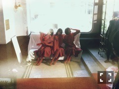
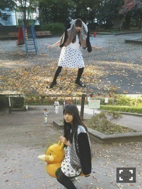

| 2015/12 24 Thu | 宇宙人ロボットおじ いちゃん。685回目 |
クリスマスショー武道館2days
無事終了いたしました！
メドレーでライトセーバーを
使ったシーンはお気に入りです。
バレエもちょっとだけ披露しました。
気づいたかなあ？？
バースデーライブが延期というのは
残念ですが、いろんなアイディアで
バースデーを盛り上げるのも
ありかも！と、思います。
14thは3月23日！
寒い中来てくださったみなさん
本当にありがとうございました！！
サンタさんがいっぱい居て
可愛かった、、

MV集発売中。
見てほしいのは咄嗟、
好きなのはシャキイズム、扇風機、
そんバカ、月の大きさ、転鐘、
無表情、あらロマ、、
過去の作品のメイキング
たっぷりでした。
MdNムック片手に見てみましょう。

MIRROR発売中。
憧れのスタッフの方々との
夢のような現場だった。
もっと撮ってほしい、、！
そういや、こないだ購入した
ナタリーレテさんの本、
直筆サインとキノコのイラスト入り
だったったった！！！

NORIKO NAKAZATO主催
期間限定ショップ
「ようこそ、ISETAN 宇宙支店へ 〜わたしたちの未来の百貨店〜」
26日〜1月12日
伊勢丹新宿店本館2階＝センターパーク/TOKYO解放区
にてスタートします。
未央奈は宇宙支店の案内人、
私は旅の案内人
nn airのチーフパーサーを
務めさせていただきます。
アテンションプリーズ
ぜひ店頭で1000年後の
ファッションを体感してください！

お茶目なCAです
ほんの少しの探究心によって
環境変化のスピードが著しい
11月と12月。
残りも頑張ります。
まりか
コメント(416)
2015/12/24 22:49